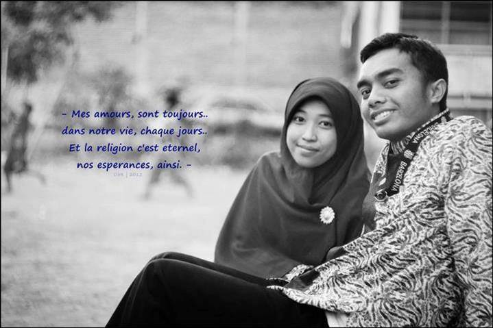

Samsul Anam, Juara Favorite Based On Quality
10 November 2016 lalu bertepatan dengan hari Pahlawan, salah satu warga LDII Kabupaten Malang Samsul Anam menyabet Juara Favorite Based On Quality dalam Konvensi PSG (Problem Solving Group) PT.Indolakto Purwosari Tahun 2016. Samsul Panggilan akrabnya adalah salah satu pengurus DPD LDII Kabupaten Malang bidang ICT.
Sebelumnya beliau juga menyabet juara lomba Siduta Publishing Contest (SPC) 2016 sebagai pemenang kategori artikel terbaik dalam judul “Pemuda Sukses Berawal Dari Bangun Malam”. Saat menjadi Mahasiswa beliau juga aktif mengikuti kompetisi lomba-lomba karya tulis ilmiah seperti PKM, LKTI, LKTM dll tak jarangpun mendapat juara. Pernah menjadi juara di ajang i-STEP RAMP IPB Bogor, Juara Pre Mentoring juga pernah juara Festival Pemuda Berprestasi Kemenpora 2009 mendapat ahugerah Youth National Science And Technologi Award.
Ia mengatakan, “Banyak orang percaya pada Al Quran tapi tidak semua yakin pada isinya Al Qur’an." Misalnya, ia melanjutkan, dalam kalimat Intansurullaha yansurkum (apabila kamu menolong agama Allah kamu bakal ditolong) namun orang lebih yakin kalau kerja keras itu kunci utama keberhasilan. Atau dalam kalimat, Anfik unfik alaika (Infaklah pada-Ku niscaya Aku akan menginfakimu). Namun orang terkesan berhemat mengeluarkan hartanya untuk sedekah. Termasuk dalam kalimat, "Menikahlah niscaya Aku Allah akan mencukupimu."
Banyak orang enggan menikah karena ragu dengan Allah. "Maka dari itulah saya ingin membuktikan janjinya Allah itu terlebih dahulu bahwa intansurullaha yansyurkum itu benar, anfik unfik alaika itu benar, dan menikah bakal dicukupi Allah itu benar. Dan Alhamdulillah, apa-apa yang saya yakini berkat kuasa Allah terbukti kebenarannya.” ujar Samsul yang merupakan salah satu alumni PPM Baitul Jannah Malang.
Samsul yang kini mendapat amanah sebagai pengurus PPG dalam bidang Bimbingan konseling, ia berharap agar remaja LDII tidak hanya tahu isinya Al Qur’an tapi juga harus meyakini. Tidak hanya mampu baca secara fasih tapi benar-benar pasti yakin akan kebenarannya. Prestasi yang diraih Samsul adalah semata-mata rahmat dari Allah dengan harapan agar bisa menginspirasi remaja LDII dimana janjinya Allah itu benar.
Kebenaran yang perlu diimani secara lahir dan batin jangan ada keraguan sama sekali sebab Allah mengikuti prasangka hambaNya. Satu visi dengan istrinya (Marrisa Rizqil) mereka ingin berkontribusi sebanyak-banyaknya dalam pengembangan diri remaja LDII sebagai bentuk kesyukuran pada Allah atas pemberian kenikmatan selama ini.
Bersama istrinya menggagas kelas pernikahan dalam Atribut MCM (Manajemen Cinta Matra) setiap 3 bulan sekali dimana kelas ini bukan bertujuan untuk menjodoh-jodohkan remaja usia nikah tapi kelas yang bertujuan membekali para remaja LDII Malang agar punya bekal wawasan, ilmu, knowledge dan skill sebelum mengarungi bahtera rumah tangga (pernikahan). Gerakan yang diusungnya “Keluarga bahagia akan menghasilkan generasi yang bermental positif dan berprestasi”. Mudah-mudahan mimpi besar pasangan ini bisa menjadi kenyataan dan menginspirasi kita semua. Aamiin (Abu H)